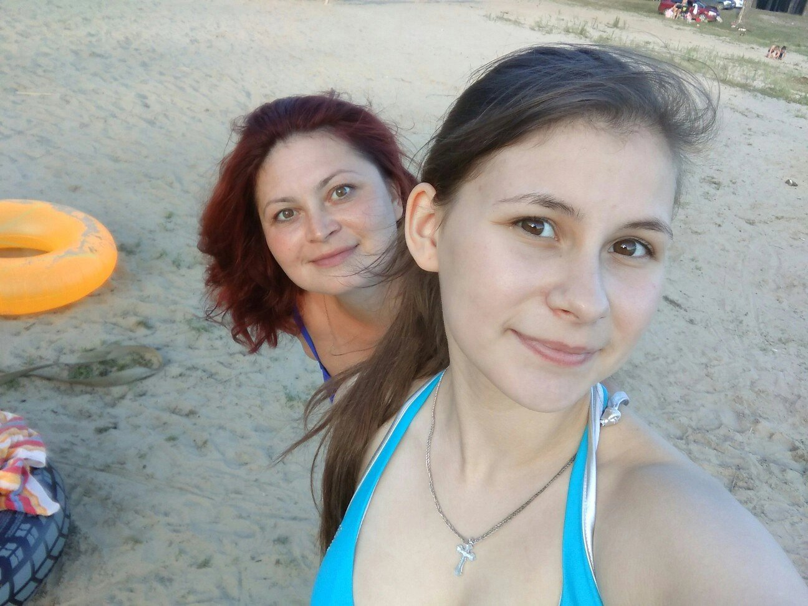

Куплет 1
Тебя зовут Катя, но для меня
Ты мамик, масюньчик, масюнь моя.
Сильная, гордая, словно огонь,
Настоящая львица — характер и бронь.
Ты шла напролом, не боясь ничего,
И жизнь не сломала в тебе никого.
Одна поднимала, одна берегла,
И всё, что могла, ты мне отдала.
Пред-припев
Я помню Жукова, утро, рассвет,
Как в школу вела меня за руку вслед.
Твоя тёплая ладонь и тревога в глазах,
И целая жизнь помещалась в мечтах.
Припев
Мама, ты рядом — и мне не страшно,
Сколько бы вьюга ни била однажды.
Ты мне собою дала понять,
Как можно падать — и снова вставать.
Мама, спасибо за каждую боль,
Что ты закрыла своею рукой.
Мы были вместе сквозь темень и дым,
И потому этот свет сохранил нас двоих.
Куплет 2
Ты мне говорила: бывало порой
Один окорочок был на месяц с тобой.
И денег так мало, и сердце в тени,
Но ты всё равно зажигала огни.
Я в магазине тянулась рукой
К конфетке, к шоколадке, к одной дорогой.
А ты улыбалась, скрывая печаль,
Хотя разрывалась внутри, как хрусталь.
Пред-припев
И как тебе было — я только теперь
Могу хоть немного измерить потерь.
Сколько бессонных, беззвучных ночей
Ты прятала боль от меня поскорей.
Припев
Мама, ты рядом — и мне не страшно,
Сколько бы вьюга ни била однажды.
Ты мне собою дала понять,
Как можно падать — и снова вставать.
Мама, спасибо за каждую боль,
Что ты закрыла своею рукой.
Мы были вместе сквозь темень и дым,
И потому этот свет сохранил нас двоих.
Куплет 3
А годы прошли, и сменился наш свет,
И в доме твоём теперь счастья рассвет.
Ты всё же добилась, ты всё же смогла,
Сквозь голод и слёзы себя пронесла.
Теперь ты умеешь пространство любить,
Уютом, ремонтом его оживить.
Где были когда-то тревога и страх —
Теперь красота в твоих сильных руках.
Теперь я взрослее, и вижу ясней,
Как много ты вынесла ради моих дней.
И если захочешь — хоть каждый наш день
Я буду нести тебе сладость взамен.
Финальный припев
Мама, ты рядом — и мне не страшно,
Сколько бы вьюга ни била однажды.
Ты мне собою дала понять,
Как можно падать — и снова вставать.
Мама, спасибо за каждую боль,
Что ты закрыла своею рукой.
Мы были вместе сквозь темень и дым,
И потому этот свет сохранил нас двоих.
Аутро
Ты львица, ты нежность, ты дом и тепло,
С тобой даже трудное было светло.
И если сегодня я что-то могу —
То только потому, что стою на твоём берегу.